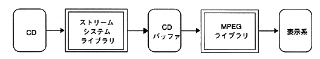

Decodes the CD buffer data and outputs it as image data.

∙ Data is supplied from the stream system to the MPEG library through the CD buffer. Therefore, the stream handle generated by the stream system is passed to the MPEG library. The MPEG library takes the data from this stream handle and decodes it.
To use this library, the following libraries must be linked at the same time.
- SEGA_STM.LIB: Stream system library
- SEGA_GFS.LIB: File system library
- SEGA_CDC.LIB: CD communication interface library
- SEGA_DMA.LIB: DMA library
- SEGA_CSH.LIB: Cache library